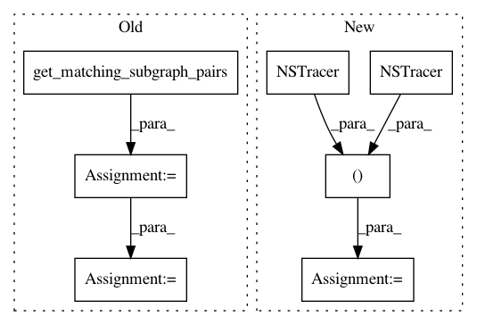

d73e36a44ab3fa760d385c881db0fa393a557a65,torch/quantization/ns/numeric_suite_core_apis_fx.py,,compare_weights,#Any#Any#Any#Any#,117
Before Change
base_name_to_sets_of_related_ops = get_base_name_to_sets_of_related_ops()
type_a_related_to_b = \
get_type_a_related_to_b(base_name_to_sets_of_related_ops)
matched_subgraph_pairs = get_matching_subgraph_pairs(gm_a, gm_b)
// split the subgraph pairs into one data structure for each model
nodes_and_names_to_instrument_a: List[Tuple[Node, str]] = []
nodes_and_names_to_instrument_b: List[Tuple[Node, str]] = []
for match_name, match in matched_subgraph_pairs.items():
(node_start_a, node_end_a), (node_start_b, node_end_b) = match
nodes_and_names_to_instrument_a.append((node_start_a, match_name))
nodes_and_names_to_instrument_b.append((node_start_b, match_name))
// populate the results, one model at a time
results: NSResultsType = {}
add_weight_info_to_dict(
model_name_a, gm_a, nodes_and_names_to_instrument_a, results)
add_weight_info_to_dict(
After Change
type_a_related_to_b = \
get_type_a_related_to_b(base_name_to_sets_of_related_ops)
tracer_a, tracer_b = NSTracer(), NSTracer()
gm_a = GraphModule(model_a, tracer_a.trace(model_a))
gm_b = GraphModule(model_b, tracer_b.trace(model_b))
return _compare_weights_impl(model_name_a, gm_a, model_name_b, gm_b)
In pattern: SUPERPATTERN
Frequency: 3
Non-data size: 7
Instances
Project Name: pytorch/pytorch
Commit Name: d73e36a44ab3fa760d385c881db0fa393a557a65
Time: 2021-03-12
Author: vasiliy@fb.com
File Name: torch/quantization/ns/numeric_suite_core_apis_fx.py
Class Name:
Method Name: compare_weights
Project Name: pytorch/pytorch
Commit Name: d73e36a44ab3fa760d385c881db0fa393a557a65
Time: 2021-03-12
Author: vasiliy@fb.com
File Name: torch/quantization/ns/numeric_suite_core_apis_fx.py
Class Name:
Method Name: prepare_model_outputs
Project Name: pytorch/pytorch
Commit Name: d73e36a44ab3fa760d385c881db0fa393a557a65
Time: 2021-03-12
Author: vasiliy@fb.com
File Name: torch/quantization/ns/numeric_suite_core_apis_fx.py
Class Name:
Method Name: prepare_model_with_stubs